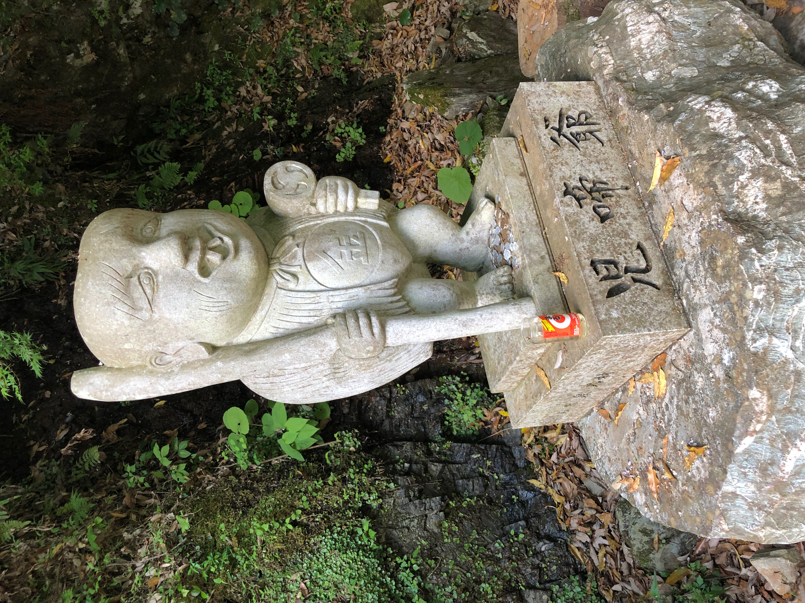
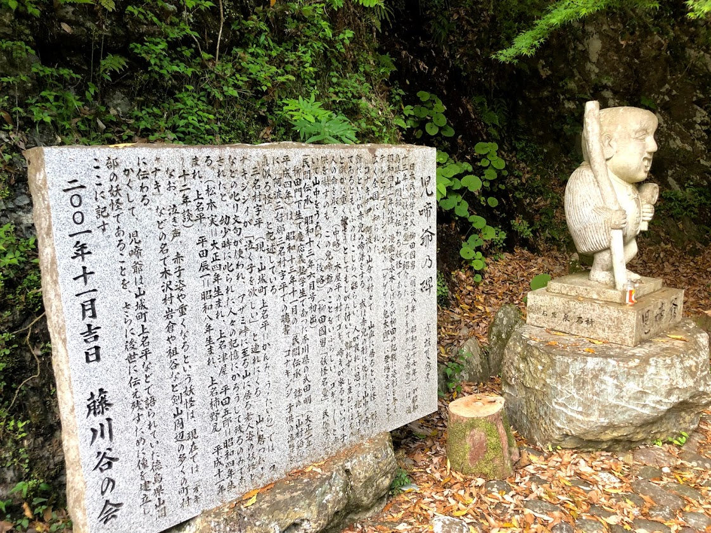
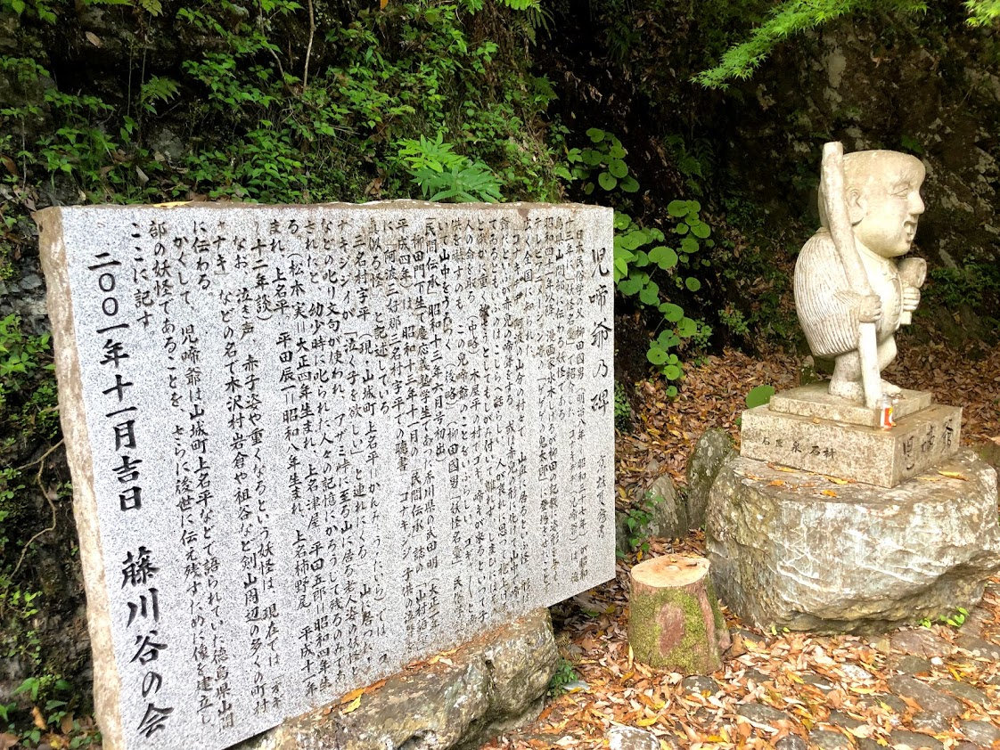

早朝は、運が良ければ、雲海があたり一面を覆う圧巻な光景を拝むことができます。また、周辺には日本一の水質を誇る（国土交通省発表）吉野川に続く湧き水が多く流れています。また、この地域に古くから伝わる妖怪伝説があります。
徳島県三好市山城町、ここには大歩危・小歩危と呼ばれる名勝地があり豊かな自然に囲まれた場所です。目に鮮やかな四季の移ろいが昔と変わらぬ光景として楽しめる山城町には数多くの妖怪伝承がやはり昔と変わらぬ姿のまま語り継がれています。それは山城町には平地がほとんど無く、地滑り地帯でもあるため時代が変わっても自然の厳しさと危険な場所であることに変わりが無かったからではないかと言われています。
危険な崖や淵、細くて暗い山道、多発する自然災害。そのようなモノから身を守るため、また自然の尊さを親から子へと伝えるためにそこへ現れる妖怪の話しをしながら危険な場所へ近付いたり山の神を荒らしたりしてはいけないと言うことを暗に諭しました。
もちろん現在では道路も整備され電灯もある程度は設置されましたが、急峻な崖や危険な場所に変わりはありませんし、妖怪話しに登場する祠や墓も多数残っていて今でも祀られています。そのため妖怪の話しは「昔話し」では無く実際に生きている話しとして現在でも語り継がれているのです。
＜引用元：道の駅大歩危・妖怪屋敷と石の博物館＞
 


Our farm-inn, "Tenku-no-Yado", is located on a part of a steep mountain slop in Tokushima-Prefecture of Japan. which might appear to be hard for humans to live in. But our ancestors made a determination to lead a safe life here a few hundred years ago escaping from their enemy. The altitude is 600 meters high. The creanest river (Yoshino-River) in Japan flow near our mountain. The view is fantastic (sometimes "a sea of clous" can be seen). As people from outside do not often visit our village, we will sincerely treat guests and would like to offer unique local food and life which can be your precious memory.
Because of this environment which is challenging for humans, the rich nature has been preserved and some supernatural legends hard to believe for people living in urban areas have been born especially about "Yokai". "Yokai" are spiritual creatures or monsters which enjoy frightening locals but at the same time they have been respected as a part of gods in Japan which warn locals not to do wrong things and lead them to good deed. Nowadays the rumors or experiences of encountering Yokai are not often heard due to the present modernized society. But you might see one at this unique location.
以下を入力後、送信ボタンを押してください。
後日返答させていただきます（アナログでスミマセン・・）。